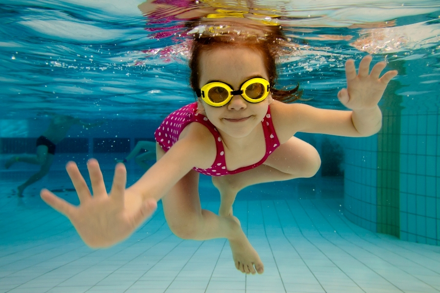

Чем и почему полезно плавание
Плавание является одним из любимых занятий детей любого возраста. Многие родители с первых недель жизни приучают ребёнка к водной стихии, используя сначала обычные ванночки, а затем надувной бассейн. Это отличный способ укрепить иммунитет малыша, лучше развить его физические и когнитивные способности. Чтобы заниматься с ребёнком плаванием круглый год, как нельзя лучше подойдёт бассейн. По возможности можно записаться в ближайший спортивный комплекс и посещать занятия 2–3 раза в неделю. Для владельцев частных домов или дачных участков ещё более удобным вариантом станет каркасный бассейн, который можно установить во дворе или в крытом помещении. В продаже есть различные сборные конструкции, которые характеризуются простотой монтажа и удобством использования. Плавание детей в бассейне обеспечит отличное настроение, позволит малышу выплеснуть энергию, укрепить здоровье и ускорит его развитие.
Плавание положительно влияет на детский организм, так как во время занятий задействованы абсолютно все мышцы тела. Водные процедуры позволяют улучшить деятельность многих органов и систем, являются отличной профилактикой проблем с позвоночником и опорно–двигательным аппаратом. Особо заметна польза плавания в бассейне для детей дошкольного и школьного возраста. Так как именно в этот период происходит активное развитие всего организма маленького человека. Отвечая на вопрос о том, чем полезно плавание в бассейне на детей, можно выделить такие достоинства этого занятия:
- активизация обменных процессов;
- укрепление дыхательных путей;
- тонизирование сердечной мышцы и всей кровеносной системы в целом;
- сохранение правильной осанки;
- профилактика плоскостопия;
- насыщение кожи малыша микроэлементами за счёт естественного водного массажа.
Кроме того, регулярные занятия плаванием помогают формированию здоровой и развитой личности ребёнка. Учёными доказано, что водные упражнения способствуют развитию таких черт, как целеустремлённость, решительность, смелость, самостоятельность, коммуникабельность. Также занятия плаванием улучшают аппетит ребёнка, способствуют более глубокому сну, снимают эмоциональное напряжение, доставляет малышу удовольствие и радость.
Купание в бассейне для ребёнка может стать не просто приятным времяпрепровождением, но и отличным способом для тренировки организма. Учитывайте, что малыши дошкольного и школьного возраста обязательно должны заниматься в воде под присмотром и контролем со стороны взрослых. Чтобы занятия принесли пользу, можно выполнять упражнения для плавания в бассейне для детей. Конечно, тренировочный комплекс будет отличаться в зависимости от возраста ребёнка. Для начала нужно освоить техники для малышей, которые ещё не умеют держаться на воде. Предлагаем несколько простых приёмов:
- «Полетели»: посадите ребёнка на бортик бассейна и, держа его за руки, потяните к себе, чтобы он спрыгнул. При этом можно приговаривать: «Сидели, сидели, и — полетели!»
- «Догонялки»: положите карапуза на поверхность воды животиком вниз, держите его за ладошки и тяните за собой, как будто убегаете.
- «Морская лошадка»: малыш крепко держит вас за шею со спины, а вы идёте в воде или плывёте. С уверенными детками можно постепенно опускаться под воду, пока карапуз не нырнёт с вами.
- «Всплываем»: держите ребёнка за руки или туловище и постепенно опускайте под воду, а затем с силой выталкивайте вверх.
Такие простые занятия помогут малышу уверенно опускаться под воду, задерживать дыхание и держаться на поверхности. Когда ребёнок уже окончательно усвоит эти навыки, можно приступать к более сложным занятиям, которые направлены на формирование способностей плавания.